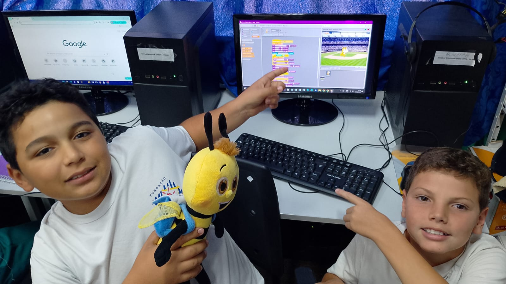
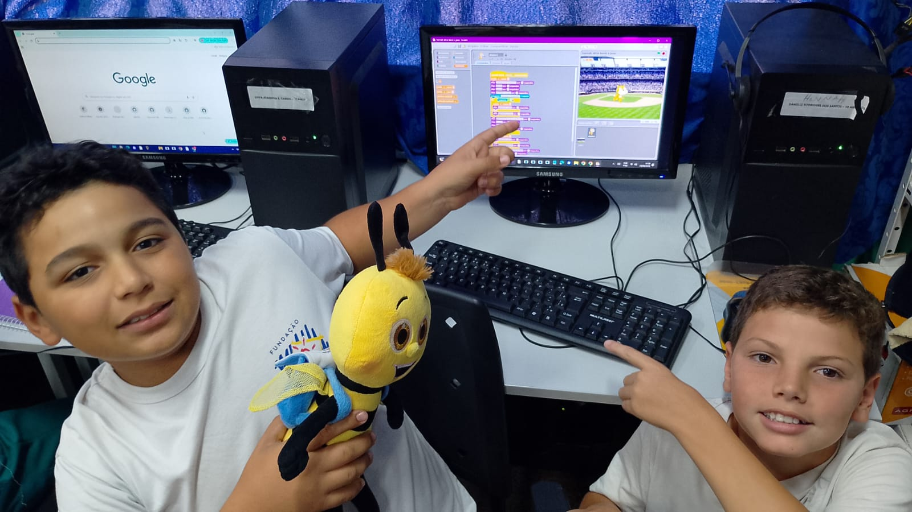

O que é Bullying?
Bullying é um comportamento agressivo e repetitivo que pode causar danos físicos e emocionais às vítimas. Pode acontecer em escolas, ambientes de trabalho e até mesmo online.
Resumo do projeto...
→ O ponto de partida do projeto foi o filme Um Sonho Possível (2009), baseado em uma história real. O filme acompanha Michael Oher, um adolescente sem-teto e traumatizado que é acolhido por Leigh Anne Tuohy e sua família. Com o apoio e amor incondicional dos Tuohy, Michael encontra estabilidade, desenvolve seu potencial atlético e acadêmico, e se torna um dos jogadores de futebol americano mais promissores dos Estados Unidos. A relação transforma tanto a vida de Michael quanto da família que o acolheu.
→ Após isso, fizemos um Quiz com perguntas referentes ao filme utilizando nossos conhecimentos em programação.
→ A etapa seguinte foi questionar sobre o Bullying e seus efeitos a longo prazo e fazer um aprofundamento sobre o tema através de vídeos.
→ Depois, ouvimos e tiramos dúvidas em nossa comunidade de aprendizagem com autoridades sobre o assunto.
→ Por fim, fizemos um jogo de perguntas e respostas usando o Scratch e tiramos a nossa conclusão sobre o projeto no geral.


 
